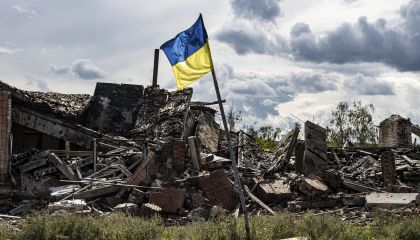
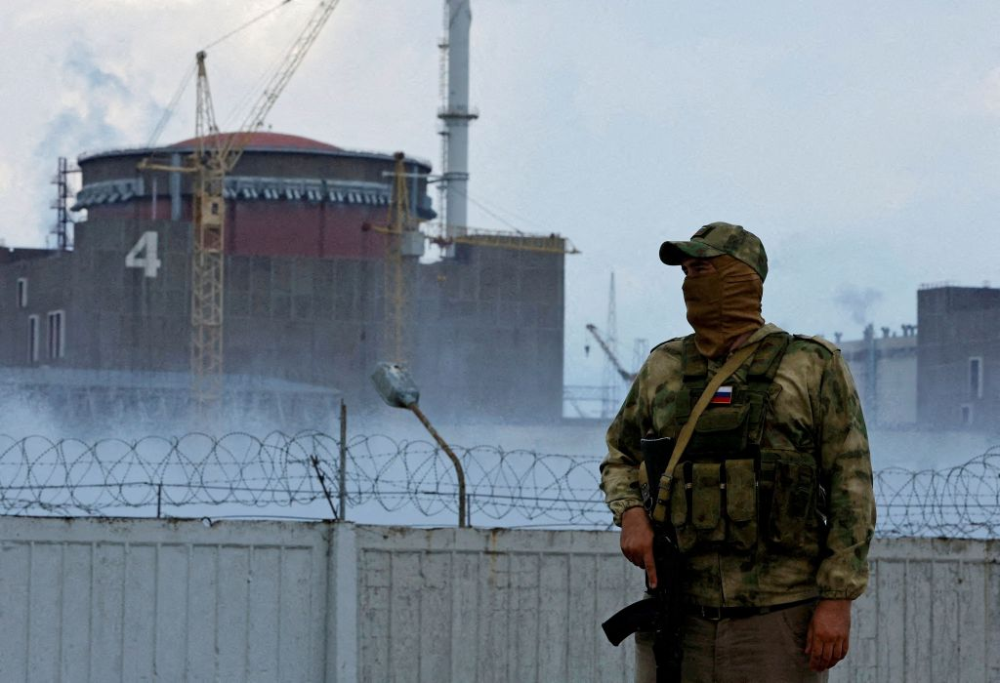
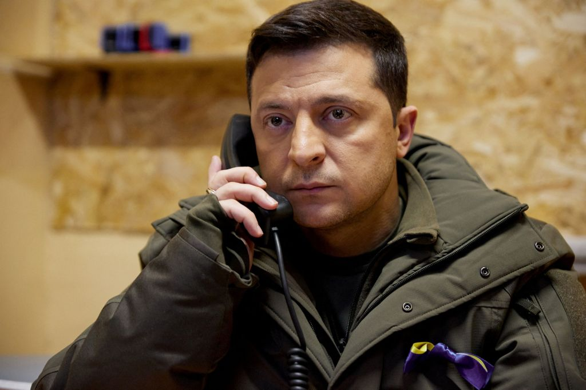
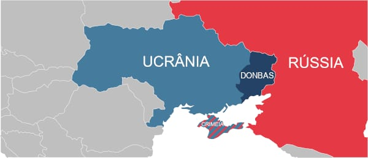

Rússia x Ucrânia
INTRODUÇÃO
Ucrânia nos ajuda a entender a origem das disputas entre os países, inclusive a guerra que perdura há mais de
um
ano.Uma das principais causas apontadas para a sua eclosão foi a retomada das negociações para a Ucrânia se
tornar um membro da Otan.

CONTEXTUALIZANDO
No dia 23 de fevereiro de 2022, o presidente russo iniciou a invasão da Ucrânia sob o pretexto de
“desnazificar”
e “desmilitarizar” o país.
Além disso, afirmou que haverá consequências nunca antes vistas caso haja interferência externa. Sendo a
segunda
potência militar do mundo contra um país muito menor,
a Rússia está massacrando qualquer capacidade defensiva da Ucrânia. Até agora, a comunidade internacional
anunciou sanções.

JUSTIFICATIVAS DA RÚSSIA
Desde o final de 2021, a Rússia concentrou forças militares perto da Ucrânia, aumentando tropas e
equipamentos.
Putin demandou à Otan que a Ucrânia não se juntasse à aliança ocidental,
considerando isso uma ameaça à integridade territorial russa. Após reconhecer a independência de áreas
pró-Rússia,Putin justificou a invasão alegando "genocídio" no Leste da Ucrânia. Em 24 de fevereiro,
Putin afirmou em discurso televisivo a necessidade de pôr fim ao suposto genocídio, apresentando a Rússia
como
única esperança na região.
As negociações entre os países buscaram um acordo de paz, com reivindicações russas incluindo neutralidade
militar da Ucrânia, desmilitarização,
reconhecimento das áreas separatistas e a Crimea como parte russa desde 2014.

O QUE DIZ A UCRÂNIA
Na atual crise, o presidente ucraniano, Volodymyr Zelensky, emerge como uma figura central, surpreendendo a
comunidade internacional com sua liderança e permanência no país durante o conflito.
Zelensky nega a presença de grupos neonazistas em seu território, apelando por sanções contra a Rússia e
solicitando apoio militar, predominantemente em forma de defesa.
Ele propõe a criação de uma nova aliança internacional para garantir a paz em territórios invadidos.
O governo ucraniano acusa a Rússia de atacar alvos civis deliberadamente, alegando crimes contra os direitos
humanos, e destaca momentos de tensão,
como a descoberta de centenas de corpos em Bucha, evidenciando as alegadas atrocidades russas.

REAÇÃO GLOBAL E SANÇÕES
Desde o início do conflito na Ucrânia, sanções ocidentais contra a Rússia resultaram em aumentos
significativos nos preços de alimentos e commodities, gerando uma crise alimentar e inflação global. A
invasão russa levou os preços do petróleo a níveis não vistos desde 2008. O congelamento de ativos russos e
a exclusão de bancos do sistema Swift isolaram a Rússia financeiramente. A suspensão do NordStream 2 pela
Alemanha e o reconhecimento simbólico da Rússia como "Estado patrocinador do terrorismo" pelo Parlamento
Europeu intensificaram o isolamento diplomático. A ajuda militar ocidental, incluindo armamentos e
inteligência dos EUA, desempenhou um papel crucial na defesa ucraniana.
